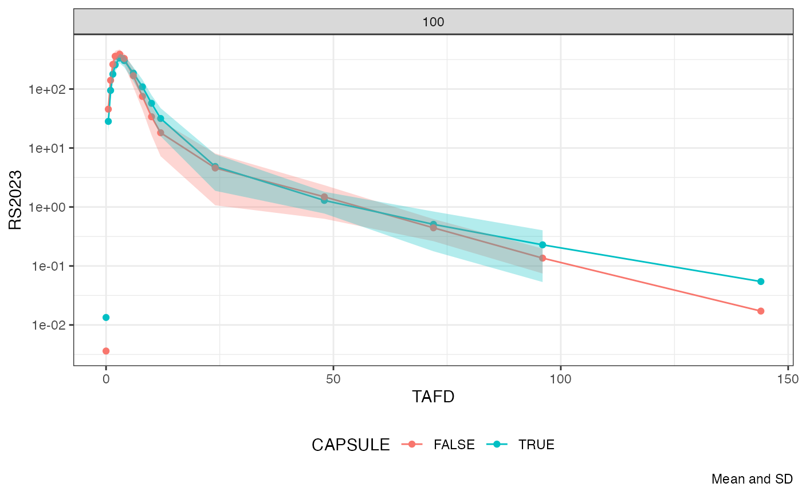
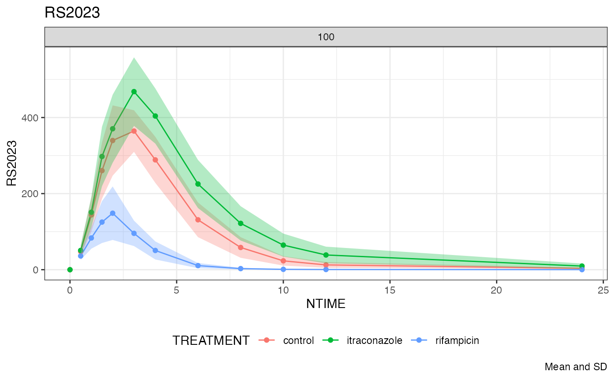

study-overview.Rmd
library(tidyverse)
#> ── Attaching core tidyverse packages ──────────────────────── tidyverse 2.0.0 ──
#> ✔ dplyr 1.1.4 ✔ readr 2.1.5
#> ✔ forcats 1.0.0 ✔ stringr 1.5.1
#> ✔ ggplot2 3.5.0 ✔ tibble 3.2.1
#> ✔ lubridate 1.9.3 ✔ tidyr 1.3.1
#> ✔ purrr 1.0.2
#> ── Conflicts ────────────────────────────────────────── tidyverse_conflicts() ──
#> ✖ dplyr::filter() masks stats::filter()
#> ✖ dplyr::lag() masks stats::lag()
#> ℹ Use the conflicted package (<http://conflicted.r-lib.org/>) to force all conflicts to become errors
library(sdtmsyn)
library(nif)
#>
#> Attaching package: 'nif'
#>
#> The following objects are masked from 'package:sdtmsyn':
#>
#> crea_mdrd, crea_raynaud, egfr_cg, egfr_mdrd, egfr_raynaud,
#> lbm_boer, lbm_hume, lbm_peters
nif_disclaimer()
#> [1] "Data set created with `nif`, version 0.49.7.9036"
nif_option(silent = TRUE)
sad_sdtm <- new_sdtm(make_study_sad())
#> Warning:
#> with negative times, compartments initialize at first negative observed time
#> with positive times, compartments initialize at time zero
#> use 'rxSetIni0(FALSE)' to initialize at first observed time
#> this warning is displayed once per session
sad_nif <- new_nif() %>%
add_administration(sad_sdtm, "RS2023") %>%
add_observation(sad_sdtm, "pc", "RS2023", cmt = 2) %>%
add_observation(sad_sdtm, "pc", "RS2023487A", cmt = 3)
sad_nif %>%
plot(log = T, max_time = 50)
#> Warning: Removed 48 rows containing missing values or values outside the scale range
#> (`geom_line()`).
fe_sdtm <- new_sdtm(make_study_fe())
fe_nif <- new_nif() %>%
add_administration(fe_sdtm, "RS2023", keep = "EPOCH") %>%
add_observation(fe_sdtm, "pc", "RS2023", cmt = 2, keep = "EPOCH") %>%
mutate(PERIOD = as.numeric(str_sub(EPOCH, -1, -1))) %>%
mutate(TREATMENT = str_sub(ACTARMCD, PERIOD, PERIOD)) %>%
mutate(FOOD = case_match(TREATMENT, "B" ~ TRUE, "A"~ FALSE))
fe_nif %>%
plot(group = "FOOD", max_time = 16, mean = T, points = TRUE)
# fe_nif %>%
# nca(analyte = "RS2023")
rba_sdtm <- new_sdtm(make_study_rba())
rba_nif <- new_nif() %>%
add_administration(rba_sdtm, "RS2023", keep = "EPOCH") %>%
add_observation(rba_sdtm, "pc", "RS2023", cmt = 2, keep = "EPOCH") %>%
mutate(PERIOD = as.numeric(str_sub(EPOCH, -1, -1))) %>%
mutate(TREATMENT = str_sub(ACTARMCD, PERIOD, PERIOD)) %>%
mutate(CAPSULE = case_match(TREATMENT, "B" ~ TRUE, "A"~ FALSE))
rba_nif %>%
plot(group = "CAPSULE", max_time = 16, mean = T, points = TRUE)
itz_rifa_sdtm <- new_sdtm(make_study_itz_rifa())
#> All nseq blocks equal. Recreating randomlist.
#> All nseq blocks equal. Recreating randomlist.
itz_rifa_nif <- new_nif() %>%
add_administration(itz_rifa_sdtm, "RS2023", keep = "EPOCH") %>%
add_observation(itz_rifa_sdtm, "pc", "RS2023", cmt = 2, keep = "EPOCH") %>%
add_observation(itz_rifa_sdtm, "pc", "RS2023487A", cmt = 3, keep = "EPOCH") %>%
mutate(PERIOD = as.numeric(str_sub(EPOCH, -1, -1))) %>%
mutate(TREATMENT = c("control", "itraconazole", "rifampicin") [PERIOD])
# mutate(TREATMENT = str_sub(ACTARMCD, PERIOD, PERIOD)) %>%
# mutate(ITZ = case_match(TREATMENT, "B" ~ TRUE, "A"~ FALSE))
itz_rifa_nif %>%
plot("RS2023", group = "TREATMENT", max_time = 24, points = T, mean = T,
time = "NTIME", title = "RS2023", log = F)